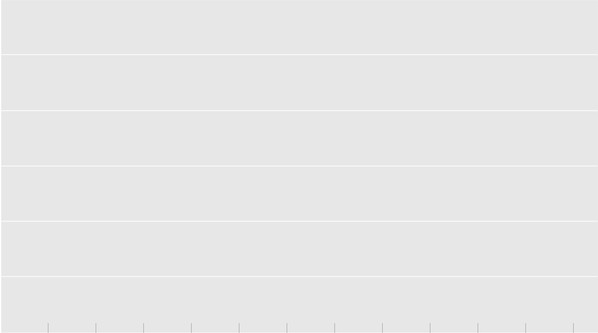

Contrary to conventional
wisdom, cyber attacks can have
a significant effect on share price. Companies that suffer a breach and respond in a way that demonstrates their managerial capabilities are rewarded by
the market. By contrast, losers see their share price drop by
25 percent in the year following a cyber attack.
Cut to 2018: the advent of social media has widened the gap. Now winners see their share price rise by 20 percent following a crisis, while losers see 30 percent of their value destroyed.
In the immediate aftermath of
a crisis, the market renders judgment swiftly. Winners see
a sustained increase in their share price, while losers experience lasting damage. The market response has become more acute over the years.
In 2000, winners that acted decisively in the wake of an
event gained around 10 percent shareholder value over the course of the year. By contrast, losers saw their share price decline by about
15 percent during that same period.
In the wake of a reputational
crisis, the typical company loses
5 percent of shareholder value over the ensuing year.
240
220
200
180
160
140
120
100
80
60
40
20
0
–30
–20
–10
0
10
20
30

Event trading days
Value impact (%)
Cyber losers
Cyber winners
Losers (2018)
Winners (2018)
Losers (2000)
Winners (2000)
Full portfolio (2018)
Click to show categories
When companies run into a reputational crisis, a quick and strategic response is critical. The charts below demonstrate how technology has amplified a crisis and its long-term effect on share price.
During a crisis, the market receives substantially more information about a company and its management compared to normal circumstances. Investors use this flood of additional information to reassess their expectations of future cash flow. The result could be a dramatic impact on market price. Some management teams impress, and expectations of future performance are even higher than prior to the crisis. Others disappoint, and investor confidence in management is shattered.
How technology has magnified reputation risk